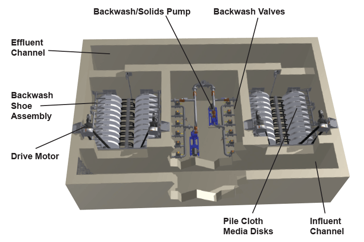

The compact version of the cloth media disc filter — designed for small and medium WWTPs with space constraints. Delivers the same proven AquaDisk® technology in a reduced footprint with simplified in-channel installation.

The Aqua MiniDisk® applies the same cloth media filtration principles as the renowned AquaDisk®, but on a compact platform optimized for smaller installations. The solution is ideal for smaller communities, industrial WWTPs with space restrictions, or smaller-scale reuse projects.
With direct installation in a concrete channel, the MiniDisk maintains continuous operation with automatic pressure-differential backwash. Its modular architecture allows future expansion by simply adding disc modules to the existing channel.
Minimal footprint without compromising final effluent quality — TSS consistently below 10 mg/L.
Each module operates independently; add capacity without replacing the existing system.
Fully automated control with pressure-differential backwash — no dedicated operator required.
Secondary effluent enters the channel and flows around the submerged cloth media discs. The liquid passes outside-in through the discs while suspended solids are retained on the external cloth surface.
When the differential pressure reaches the configured setpoint, backwash shoes automatically traverse the disc surface with pressurized water jets, removing solids and discharging them via a dedicated pump — all without interrupting effluent flow.
Effluent surrounds the discs and filters outside-in; solids retained on the cloth surface.
Automatic shoes clean the discs when differential pressure exceeds the configured limit.
Collected solids are automatically discharged to the sludge line without interrupting treatment.
Communities up to 50,000 PE requiring tertiary polishing with space constraints
Water reuse for irrigation and toilet flushing at tourism facilities
Treatment of sanitary effluents with quality for discharge or internal reuse
Tertiary polishing at industrial plants with footprint limitations
Installation in existing channels without major civil works to increase capacity
Maximizing efficiency with minimal physical space and energy use
Our technical team evaluates your project and presents the right Aqua MiniDisk® solution for your needs.